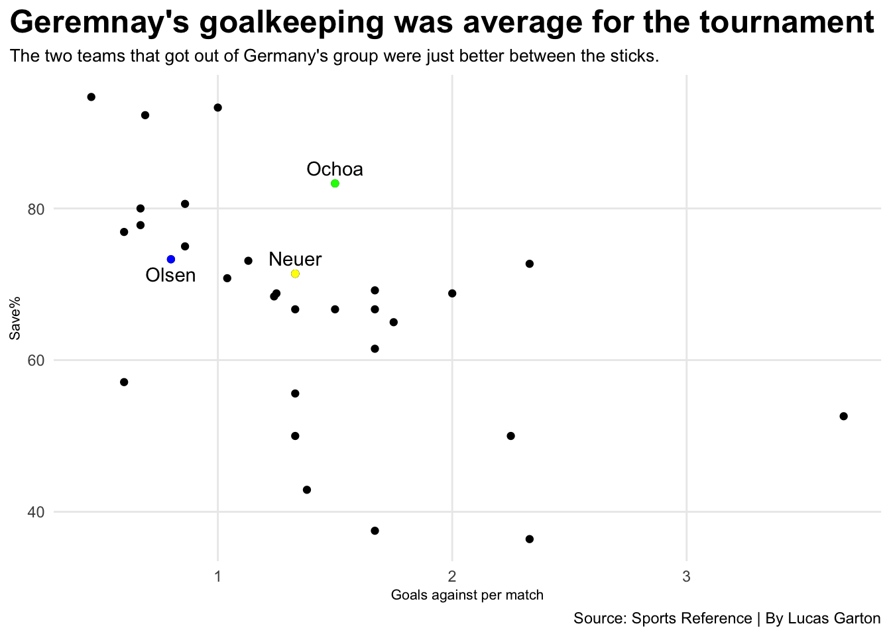

In 2018 leading up to the World Cup in Russia, Germany had topped their qualifying group with ease. They won every game and finished with a plus 39 goal differential, giving up only four goals in the ten games. Their goal differential and perfect record was the best in UEFA qualifying groups. Not to mention they were the previous World Cup winners in 2014 and in the 2016 Euros they had mad the semifinals before being eliminated.
To say the least Germany were one of if not the favorites to win the World Cup in 2018. Germany’s group seemed a favorable one for them being drawn with Mexico, Sweden and South Korea. They had a mix of young talent such as Julian Draxler and Timo Werner and cagey vets that had been in the previous World Cup squad that won the tournament in Mats Hummels, Toni Kroos and Manuel Neuer.
Coming in with all the momentum in the world Germany didn’t even get out of the group stage and actually finished last in it. So, what went so wrong between the two World Cups?
Looking at 2014 Germany and 2018 Germany a couple things stand out. Germany in 2014 scored goals and lots of them compared to 2018 Germany, who could barely even get any across the line. Also is that 2018 Germany dominated possession in their three games averaging over 70% despite being undermanned in one of their games.
Code
library(tidyverse)library(ggalt)library(gt)library(ggbeeswarm)library(ggrepel)germanystats<-read.csv("~/Desktop/Homework/SPMC 350/blogspmc350/posts/Germanysworldcupfailure/wc2014&2018.csv")newgermanystats<-germanystats%>%filter(Squad =="2014 Germany"| Squad=="2018 Germany")%>%mutate("Possession"=Poss/100)%>%select(Squad, Age,MP,Possession, per90Gls,per90Ast, Gls, Ast, CrdY, CrdR)newgermanystats%>%gt()%>%cols_label(MP ="Matches Played",per90Gls ="Goals per Match",per90Ast ="Assists per Match",Gls ="Goals",Ast ="Assists",CrdY ="Yellow Cards",CrdR ="Red Cards" ) %>%tab_header(title ="How does 2014 Germany compare with 2018 Germany?",subtitle ="2014 Germany had no problem scoring Goals while 2018 couldn't put anything in the back of the net." ) %>%tab_source_note(source_note =md("**By:** Lucas Garton | **Source:** Sports Reference") ) %>%tab_style(style =cell_text(color ="black", weight ="bold",size=24, align ="left"),locations =cells_title("title") ) %>%tab_style(style =cell_text(color ="black", align ="left"),locations =cells_title("subtitle") ) %>%tab_style(locations =cells_column_labels(columns =everything()),style =list(cell_borders(sides ="bottom", weight =px(3)),cell_text(weight ="bold", size=12) ) ) %>%opt_row_striping() %>%opt_table_lines("none")%>%fmt_percent(columns =c(Possession),decimals =1 ) %>%tab_style(style =list(cell_fill(color ="green"),cell_text(color ="black") ),locations =cells_body(rows = Squad =="2014 Germany",columns ="per90Gls") )
How does 2014 Germany compare with 2018 Germany?
2014 Germany had no problem scoring Goals while 2018 couldn't put anything in the back of the net.
Squad
Age
Matches Played
Possession
Goals per Match
Assists per Match
Goals
Assists
Yellow Cards
Red Cards
2014 Germany
26.6
7
57.9%
2.35
1.57
18
12
1
0
2018 Germany
27.2
3
71.7%
0.67
0.67
2
2
3
1
By: Lucas Garton | Source: Sports Reference
When looking at the box scores for 2018 Germany they had plenty of chances to score. In 2018 they were expected to score around 5.5 goals in their three games. In reality they only scored two. Both of the goals coming in their only win of the tournament against Sweden. The difference between goals expected and goals was the second worse in the tournament.
Code
wc2018<-read.csv("~/Desktop/Homework/SPMC 350/blogspmc350/posts/Germanysworldcupfailure/2018worldcupsquadstats.csv")newwc2018<-wc2018%>%mutate(plusminusXG = Gls-xG)ger<-newwc2018%>%filter(Squad =="Germany")ggplot() +geom_dumbbell(data=newwc2018, aes(y=reorder(Squad,plusminusXG),x=xG, xend=Gls),colour ="grey",colour_x ="red",colour_xend ="green") +geom_dumbbell(data=ger,aes(y=reorder(Squad,plusminusXG),x=xG, xend=Gls),colour ="black",colour_x ="red",colour_xend ="green") +labs(title ="Germany way underperformed its expected goals tally",subtitle ="Germany was in the red when copmapring actuall goals(green) to expected goals(red).", x="Goals", y="",caption="Source: Sports Reference | By Lucas Garton") +theme_minimal() +theme(plot.title =element_text(size =18, face ="bold"),axis.title =element_text(size =8), plot.subtitle =element_text(size=10), panel.grid.minor =element_blank(),plot.title.position ="plot" )
Germany performed better in the goalkeeping department. Manuel Neuer won the award for best goalkeeper in the 2014 World Cup and continued to perform in the 2018 tournament. Despite that it wasn’t up to par with the other goal keepers in the tournament within his group. Ochoa the best goalkeeper in Mexico’s history had one the best performances at the World Cup keeping El Tri in it with his many saves and Sweden’s’ Olsen averaged less goals against then Neuer.
Code
stats<-read.csv("~/Desktop/Homework/SPMC 350/blogspmc350/posts/Germanysworldcupfailure/2018goaliestats.csv")mex<-stats%>%filter(Squad =="Mexico")ger<-stats%>%filter(Squad =="Germany")swe<- stats%>%filter(Squad =="Sweden")ggplot() +geom_point(data=stats, aes(x=GA90, y=Savepercentage) ) +geom_point(data=mex, aes(x=GA90, y=Savepercentage), color="green") +geom_point(data=swe, aes(x=GA90, y=Savepercentage), color="blue") +geom_point(data=ger, aes(x=GA90, y=Savepercentage), color="yellow") +geom_text(data=mex, aes(x=GA90, y=Savepercentage+2), label="Ochoa") +geom_text(data=ger, aes(x=GA90, y=Savepercentage+2), label="Neuer") +geom_text(data=swe, aes(x=GA90, y=Savepercentage-2), label="Olsen") +labs(x="Goals against per match", y="Save%", title="Geremnay's goalkeeping was average for the tournament", subtitle="The two teams that got out of Germany's group were just better between the sticks.", caption="Source: Sports Reference | By Lucas Garton" ) +theme_minimal() +theme(plot.title =element_text(size =18, face ="bold"),axis.title =element_text(size =8), plot.subtitle =element_text(size=10), panel.grid.minor =element_blank(),plot.title.position ="plot" )

All in all, Germany may had a problem that many teams at the World Cup seem to run into and that is they don’t have a true goal scorer. None of the forwards that Germany brought within them managed to score a goal. They also got unlucky they had the chances and couldn’t convert them. Germany also had a brick wall in goal just the other teams in their group had a better one.